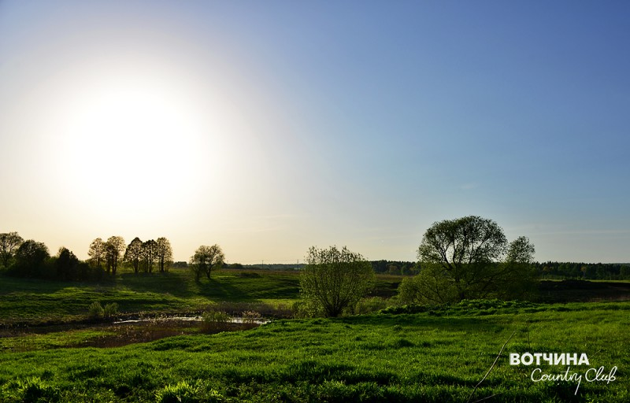
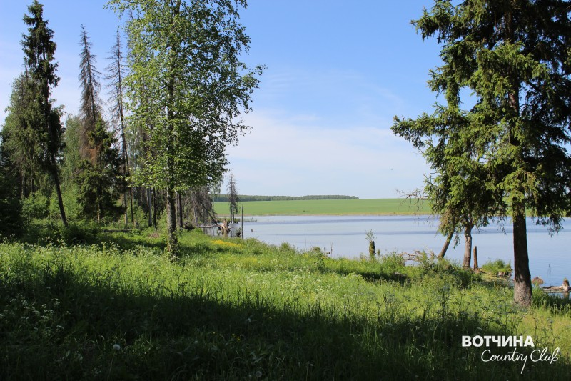

Друзья, мы решили открыть для Вас маленькую тайну или даже несколько тайн!
Вы уже знаете, что окрестности нашего поселка можно назвать предтечей популярного туристического маршрута «Золотое кольцо России». Ведь эта земля богата святыми местами и исторической памятью. Мы снова проехались по окрестностям так называемой Владимирской и Рязанской Руси, пообщались со старожилами, побывали в музеях, заповедных уголках и т.д., в общем, неплохо провели время – с пользой для себя и, надеемся, для вас.
Так вот, во время поездки мы начали составлять собственную интерактивную карту, назвать которую решили «Наше Ополье» – это достопримечательности владимирского района. И конечно, хотим поделиться ими с вами!
Калмань
Село Калмань находится в Юрьев-Польском районе Владимирской области. В двух километрах от с. Бавлены и в десяти – от города Юрьев-Польский.
Первые упоминания о селе Калмань относятся к XVI веку. Известно, что в первой половине XVI века село принадлежало старинному знатному дворянскому роду князьям Берсеневым и по наследству перешло к Марии Берсеневой-Беклемишевой, а в 1571 году, после свадьбы Михаила Пожарского и Марии, стало вотчиной Пожарских.
Иван Грозный во времена опричнины (1565 — 1572 год) сослал на поселение в Казанский край множество княжеских семей. В том числе и семью Михаила Федоровича Пожарского.
Казанская ссылка нанесла тяжелейший урон родовым землям Пожарских. Поэтому село Калмань, полученное в наследство, пришлось продать одному из московских бояр, чтобы начать восстановление других земель.
В 1573 году Калмань была пожертвована Троице-Сергиевскому монастырю.
В селе существовала деревянная церковь Преображения Господня. В 1608 году Преображенская церковь была разграблена Поляками и Литовцами, после чего оставалась «без пения» до половины этого столетия.
В середине XVII века церковь снова была восстановлена и до ХІХ столетия была деревянная.
В 1764 году указом о конфискации в пользу государства монастырских и церковных имений, село Калмань было передано в государственную казну.
В 1809 году на средства прихожан строится новая каменная церковь с колокольней и двумя престолами. Первый — в честь Преображения Господня, второй — во имя преподобного Сергия Радонежского чудотворца.
В 1894 года в селе Калмань была открыта школа грамотности, главной целью которой было повышение уровня грамотности среди населения.
В крестьянском хозяйстве села Калмань большую роль играло полеводство, так как почвы были и сейчас остаются высокоплодородными.
Во время Октябрьской Революции 1917 года Преображенская церковь была полностью разрушена. Сейчас на месте церкви в поселке Вотчина Country Club стоит поклонный крест, возле которого и совершаются Богослужения.
На территории поселка и сейчас течет река Кучка — «куча» в переводе с финно-угорского означает нагромождение, скопление чего-либо (деревьев, растений). Скорее всего, название пошло от того, что село огорожено смешанным лесом, то есть нагромождение разных деревьев. Река Кучка берет свое начало с подземных источников, около 20 км длиною, впадает в реку Колокша, которая, в свою очередь, впадает в реку Клязьма. Природная структура русла реки включает участки с быстрым и медленным течением, мелкие и глубокие, открытые и заросшие водной растительностью. Также на территории села есть искусственно созданное озеро на реке Кучка.
 
Бавлены
Бавлены известны с 1940 года как поселок при мотороремонтном заводе. Они возникли около железнодорожной станции на открытой в 1893 году линии Александров – Юрьев-Польский. В 1 км от поселка находится село Бавлены, известное с конца XIV века. С 1962 по 2005 год поселок обладал статусом посёлка городского типа.
Бавлены рассположены в Кольчугинском районе Владимирской области и являются центром Бавленского сельского поселения.
В состав Бавленского сельского поселения входят 13 населённых пунктов:
Бавлены (село), Бавлены (посёлок), Богданиха, Болдинка, Большое Кузьминское, Ежово, Зекрово, Клины, Михейково, Плоски, Семендюково, Товарково, Шишлиха.
«Село Бавление (Богоявленское) расположено при речке Бавленке. В первый раз село упоминается в духовной грамоте Можайского князя Владимира Андреевича, который в завещании отказалъ село Богоявленское сыну своему князю Семену. В конце XVI века и в течении XVII столетия село было вотчиной уже Московского патриарха…».
«В книгах патриаршего казенного приказа о селе находим следующие сведения: “120 (1594) года, 7 января патриарх московский и всея Руси пожаловал своих детей боярских Семена и Михаила Петровых в Юрьевском уезде Польского в селе Богоявленском…”».
«В книгах 153 (1645) года записано: “ в вотчине святого патриарха пустошь, что было село Богоявленское, на речке на Богоявленке”, вероятно село обратилось в пустошь после разорения города Юрьева и его окрестных селений Поляками и Литовцами в начале XVII столетия; пустошь Богоявлеская вновь была заселена лишь в 1646 году. И в книгах казенного приказа под этим годом отмечено: “деревня, что была пустошь, поставлена вновь, а в ней 8 дворов крестьян, и бобыльских (Двор бобыльский – хозяйство, не владевшее землей и не платившее налогов и податей), в них 14 человек”».
Информация из книги: «Описание церквей и приходов Владимирской епархии». Книга хранится в Юрьев-Польском историко-архитектурном и художественном музее.
Из достопримечательностей сегодняшних, в Бавленах можно отметить каменную Богоявленскую церковь с колокольней, которая построена усердием прихожан в 1810 г. Престолов в храме два: летний – в честь Богоявления Господня, теплый – в честь Рождества Пресвятой Богородицы. В советские годы храм был закрыт и разграблен. В начале 90-х годов храм был возвращен верующим и начато его восстановление. Восстанавливали храм первые настоятели священник Николай Тихомиров и священник Аркадий Гоглов. С 2000 г. Настоятелем храма является Священник Сергий Фомантьев.


Святой источник
Неподалеку от Вотчины, в селе Терновка, находится святой источник, историю о котором поведала нам бабушка Катюша 1932 года рождения, проживающая в деревне Турсино.
В окрестностях села Вошня (ныне Терновка) ранее стоял храм-красавец в честь Рождества Христова, рождества Пресвятой Богородицы, Тихвинской иконы Божией Матери и преподобной мученицы Евдокии, который был хорошо виден со всех сторон. Алтарь его располагался на огромном гранитном камне, который сохранился по сей день. Поверхность его ровная, как будто шлифованная.
Во время советской власти, в 50-е годы, когда создавались колхозы, храм был разрушен. Под сохранившимся камнем ранее были церковные подвальные помещения, от которых остался небольшой лаз. Рядом располагались и есть барские каскадные пруды. Третий пруд, самый нижний, был самым почитаемым у местных жителей. В этих окрестностях било и бьет множество ключей.
После войны недалеко от места, где была церковь, под горой, там где был источник с ключевой водой, жители Терновки нашли икону Тихвинской Божией Матери. Жители стали замечать целительную силу воды из этого ключа. Одна женщина сильно болела. Пришла она к своей хорошей знакомой бабушке Катюше и попросила отвести ее к источнику. Набрали они воды ковшом и стала бабушка Катюша свою знакомую поливать. Впоследствии ей полегчало. Жители близлежащих селений считали источник Тихвинской иконы Божией Матери исцеляющим и почитали его. Вода из этого источника попадала в пруд, дно и берега этого пруда служители церкви выложили деревом.
После войны с немцами в 50-ые годы молодежь собиралась парами на вечеринки и на камне, который был посредине реки Вошни (ныне Терновки), плакала русалка. Никогда её не видели, когда молодые люди подбирались ближе, чтобы рассмотреть - плач затихал, когда уходили – снова слышался плач ребенка.
Жители деревни, которые сейчас все разъехались, всегда почитали Тихвинскую икону Божией Матери, праздник - 9 июля.


Плещеево озеро
Национальный парк «Плещеево озеро» находится в 60 км или в получасе езды на северо-запад от Вотчины Country Club, в ярославской области, на маршруте «Золотого кольца». Уникальное озеро Плещеево и его окрестности – являются ценной природно-исторической территорией национального значения, частью природного и культурного наследия нашей страны.


Переславль-Залесский
На берегу озера Плещеево расположился один из городов, также входящих в Золотое кольцо – Переславль-Залесский.
Переславль – относительно небольшой город, но имеет полное право считаться самостоятельным интересным маршрутом. Количество древних достопримечательностей, расположившихся в Переславле и его ближайших окрестностях, просто зашкаливает для города с населением в 40 тысяч человек.
Музеи, православные монастыри и храмы, святые источники, картинные галереи, выставочные залы, памятники природы и археологии, утраченные храмы – все это там!


Юрьев-Польский
Юрьев-Польский – один из старейших городов Владимирской области, Золотого кольца. Юрьев-Польский расположен на реке Колокша (приток Клязьмы), в 20 км к северо-востоку от Вотчины. Юрьев-Польский был основан в 1152 году Юрием Долгоруким. Также по его распоряжению была сооружена почти круглая каменная крепость, которая была обнесена сохранившимся до нашего времени земляной насыпью (валом) высотой до 7 м. В центре крепости, в 1234 году был возведён Георгиевский собор - одна из главных достопримечательностей города Юрьев-Польский. Гостеприимные жители города всегда подскажут, что можно посмотреть и куда сходить, но Георгиевский собор надо посетить обязательно.
{kind=link}
{kind=link}